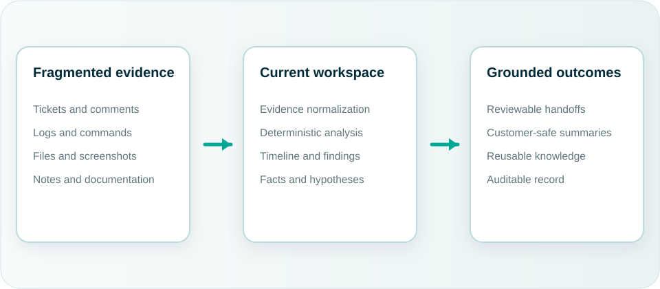

Evidence becomes fragmented
Critical context is distributed across tools, people, and time zones.
Tessn · Technical work, made traceable
Tessn builds structured software for teams working through high-stakes technical problems. Current turns tickets, logs, commands, files, notes, and documentation into a reproducible investigation record.
Why Current exists
During complex escalations, support engineers become the integration layer between ticketing, observability, terminals, chat, files, screenshots, and documentation. Current gives that work a structured home without pretending to replace the existing support stack.
Critical context is distributed across tools, people, and time zones.
Facts, hypotheses, commands, decisions, and conclusions blur together.
Resolved cases often remain difficult to reproduce, hand off, or reuse.
Investigation first
Current emphasizes inspectable evidence, deterministic analysis, explicit findings, and reviewable outputs. Optional AI assists the investigator; it does not erase the reasoning path.
The workflow
Current is designed around the actual sequence of support investigation: establish context, collect evidence, analyze, build the record, produce a handoff, and preserve reusable knowledge.

“The value is disciplined reasoning and traceability—not a promise of automatic diagnosis.”
Design-partner stage
Tessn is preparing Current for focused design-partner and pilot conversations with technical support teams handling complex customer escalations.